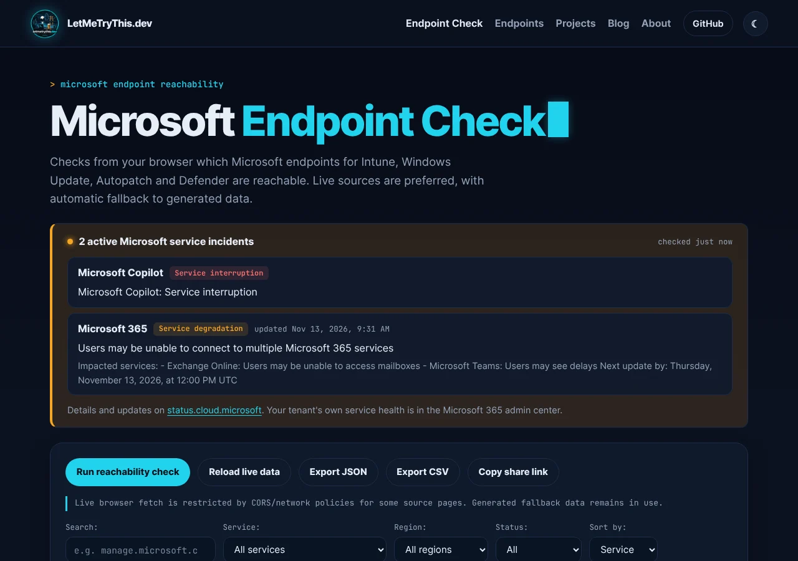
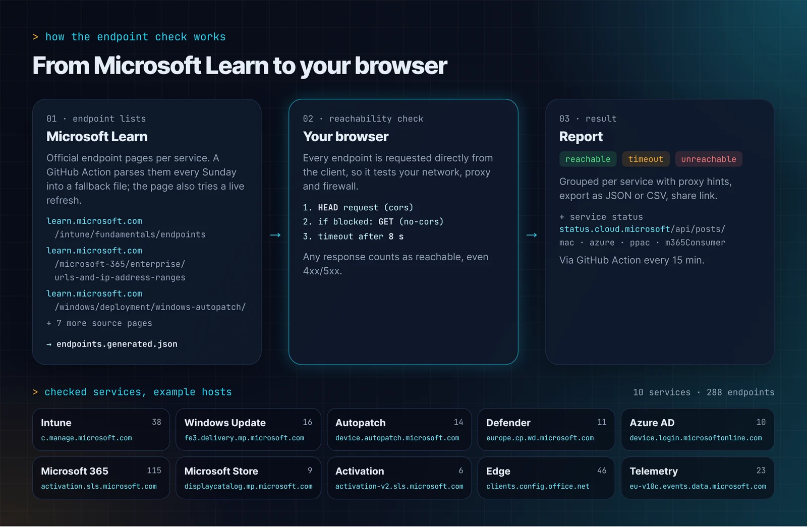
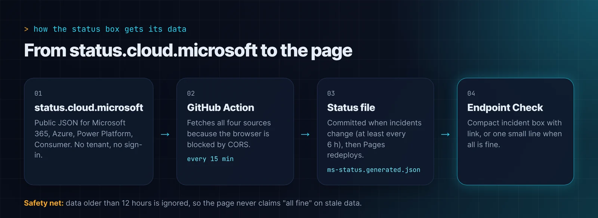

Microsoft 365 · GitHub Actions · 13 November 2026
Microsoft outage at a glance
Sometimes the timing just works out. This morning I shipped an update to my Microsoft Endpoint Check: the page now shows current incidents from status.cloud.microsoft. And right after it went live, there was already something to show.
Microsoft 365 had a major service incident today. That is exactly what the new status box is for.

What happened at Microsoft today
According to the status file my repository fetched from status.cloud.microsoft at 11:24 CET (10:24 UTC), two incidents were open at that time, both marked Service degradation:
- Microsoft 365 (enterprise): "Users may be unable to connect to multiple Microsoft 365 services". Microsoft said that features interacting with Exchange Online and email services were impacted, while parts of the services that do not depend on Exchange Online remained functional.
- Microsoft 365 (consumer): "Users may be unable to access or perform several actions in Microsoft 365 services". Listed were Outlook.com, OneDrive, OneNote, Microsoft To Do, Teams and Microsoft 365 for the web.
At that point Microsoft had not published a root cause. The consumer incident only said they were pursuing multiple workstreams to pinpoint the source and recover the affected environment. I am deliberately not speculating beyond that. For the current state, go straight to status.cloud.microsoft, and for your own tenant the Service Health page in the Microsoft 365 admin center is the more reliable source.
Why this belongs in the Endpoint Check
Anyone working in endpoint management knows the situation: Outlook does not connect, Teams hangs, a device does not sync with Intune. The first question is almost always the same:
Is it the client, the network, or Microsoft?
The Endpoint Check already answered the first part. It checks from your browser which Microsoft endpoints for Intune, Windows Update, Autopatch and Defender are reachable. What was missing was the view from the other side. If Microsoft is reporting an incident right now, you can skip a lot of troubleshooting on the client.
So this information now sits right above the reachability check.
How the Endpoint Check works
A quick reminder of what the page actually does. The endpoint list comes from the official Microsoft Learn pages of each service, for example Intune or Microsoft 365. A GitHub Action parses these pages every Sunday and writes the result to web/data/endpoints.generated.json. The page also tries to refresh the lists live and falls back to that file otherwise.
Right now that is 10 services with 288 endpoints, from Intune, Windows Update, Autopatch and Defender to Microsoft 365, Edge and Windows Telemetry.

The test runs directly in the client's browser. That way the page checks exactly the network, proxy and firewall the device really sits behind. For each endpoint it first sends a HEAD request and, if the browser blocks that, a GET request in no-cors mode. After 8 seconds the endpoint counts as a timeout. Any response counts as reachable, even a 403 or 500, because this is about the connection, not the content. The results end up grouped per service, with proxy hints and export as JSON or CSV.
What is new
- Status box for Microsoft incidents: when there are active incidents, the page shows a compact box with service, status, title and a link to status.cloud.microsoft. When all is fine, only one small line remains.
- Four sources, no sign-in: the data comes from the public JSON behind status.cloud.microsoft for Microsoft 365, Azure, Power Platform and Microsoft 365 consumer. No tenant and no sign-in needed.
- New design: the page now uses the same design as this blog.
- Link preview: sharing the link on LinkedIn or in Teams now shows a proper preview with an image.
How the data gets to the page
My first idea was to fetch the status directly in the browser. The browser blocks that because of CORS: status.cloud.microsoft does not allow requests from other sites. A static GitHub Pages site without its own backend needs a detour.

The detour is a GitHub Action called "Update Microsoft service status":
- Every 15 minutes it fetches the four public sources.
- The result goes into
web/data/ms-status.generated.json. It only commits when the incidents change or the last check is older than 6 hours. - GitHub Pages then redeploys the site, and the Endpoint Check shows the new state.
One detail mattered most to me: the page ignores data older than 12 hours. If the Action ever stops running, the page should not cheerfully report "all fine" while Microsoft is having problems. No statement is better than a wrong one.
What the box is not
The status box does not replace Service Health in the Microsoft 365 admin center. It only shows what Microsoft reports publicly and knows nothing about your tenant. Because of the 15-minute interval and the redeploy, it can also lag a few minutes behind.
For the quick question "Is this a Microsoft problem right now?" it is good enough. And that is a question you ask yourself in day-to-day support more often than you would like.
As always, the code is open on GitHub. Feedback and issues are welcome.